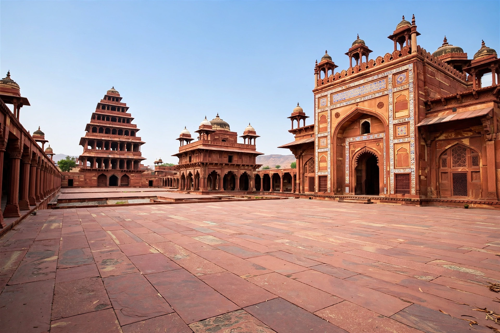

| Fatehpur Sikri | |
|---|---|
| Location | Agra district, Uttar Pradesh, India |
| Founded | 1569–1571 by Akbar |
| Role | Capital of the Mughal Empire, 1571–1585 |
| Material | Red sandstone |
| Coordinates | 27.0945° N, 77.6610° E |
| Status | UNESCO World Heritage Site (1986) |

Fatehpur Sikri is a town and archaeological site in the Agra district of Uttar Pradesh, India, founded as the capital of the Mughal Empire in 1571 by the emperor Akbar. Built largely of red sandstone on a ridge west of Agra, the city served as the imperial capital until 1585, when Akbar relocated to Lahore; it was soon largely abandoned, traditionally said to be because of water scarcity. Fatehpur Sikri preserves one of the finest ensembles of Mughal architecture — palaces, audience halls, mosques and tombs blending Islamic, Persian, Hindu and Jain design — and was inscribed as a UNESCO World Heritage Site in 1986.
The site was the village of Sikri, home of the Sufi saint Shaikh Salim Chishti, who prophesied that the heirless Akbar would father three sons. After the birth of Prince Salim (the future Jahangir) in 1569, Akbar built a palace complex and mosque beside the saint's hermitage, and following his conquest of Gujarat in 1573 the city was renamed Fatehpur — "City of Victory". For fourteen years it was the vibrant centre of Akbar's court, where the emperor held religious debates in the Ibadat Khana with Muslim, Hindu, Jain, Zoroastrian and Jesuit scholars. In 1585 Akbar moved his capital northwest to Lahore to meet threats on the frontier, and Fatehpur Sikri's court era ended; it was later briefly occupied by Jahangir during a plague outbreak in Agra.
The walled city, roughly 3 km long and 1 km wide, is dominated by the Jama Masjid, one of the largest mosques in India, entered through the monumental Buland Darwaza — a 54-metre-high gateway, among the tallest in the world, built to commemorate the Gujarat victory. Within the mosque courtyard stands the white marble tomb of Salim Chishti, famed for its intricate jali (latticed stone) screens, still a place of pilgrimage, especially for couples seeking children. The palace complex includes the Diwan-i-Khas with its extraordinary central pillar carved with merging Hindu, Muslim, Jain and Buddhist motifs; the five-storey Panch Mahal; the ornate houses attributed to Akbar's queens (including Jodha Bai's palace and Birbal's house); and the Anup Talao pool platform where the court musician Tansen is said to have performed.
After the court's departure the city emptied, its water supply — dependent on a lake and wells — insufficient for a metropolis. It never entirely died: a small town persisted, and the monuments were surveyed and conserved from the 19th century onward under the Archaeological Survey of India. Today Fatehpur Sikri is a major tourist destination, usually visited together with the Taj Mahal at Agra, some 40 km away.